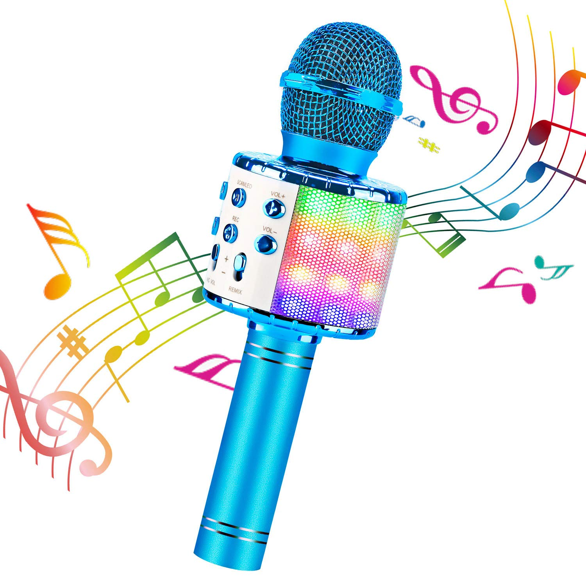
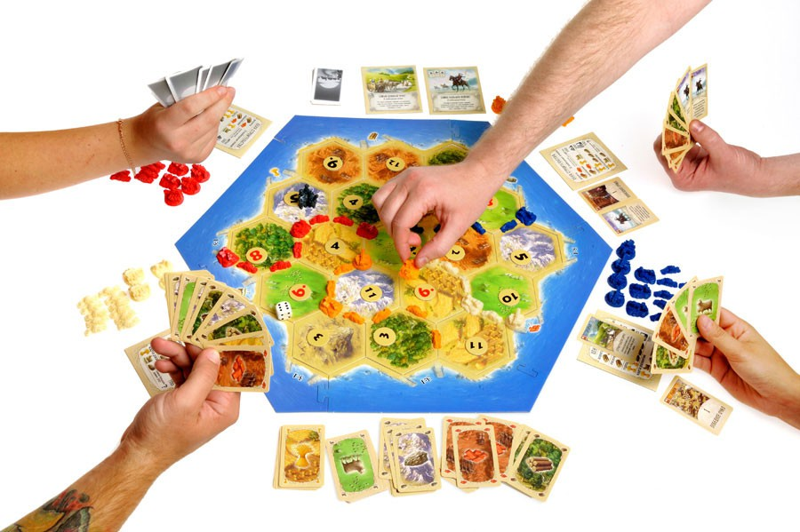
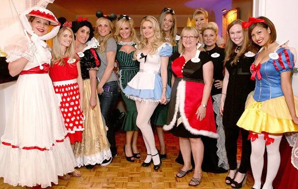

FOR FUN - це сайт з веселими ідеями для вечірок та свят з різними тематиками
Життя настільки яскраве, наскільки ми самі готові його таким зробити. І в цьому нам допомагають яскраві вечірки, на яких можна цікаво провести час у колі найкращих друзів.
На цій сторінці ви дізнаєтеся як самостійно організувати собі свято. В шапці сайту ви знайдете розділи з конкретними тематиками подій
Якщо ви просто хочите провести весело час з друзями влаштувавши вечірку, перше, про що тобі варто подумати, це ідея. Як ти уявляєш собі вечір? Яка мета? Які “розважальні” моменти будуть ключовими? Можливо, ти хочеш більш спокійний вечір з розмовами або переглядом кіно. А можливо, навпаки, в пріоритеті “дикі” танці? :)
Попкорн Party
Фанатієш від гри Роберта Де Ніро чи Дженніфер Еністон??! А, можливо, у тебе інші “кіношні” фаворити?? Якщо ти і твої друзі завжди “за” переглянути цікавий фільм, то можеш влаштувати попкорн Party!
Кому підійде: фанатам кіно та серіалів.
Що потрібно: телевізор (чим більше, тим краще) + акустична система (повір, це важливо) + попкорн (яке ж кіно без попкорну??!).
Playstation Party
Любиш Need for Speed, баскетбол чи GTA? Якщо твої друзі такі ж фанати геймінгу та “Соньки”, то можеш влаштувати вечір ігор! Уяви собі як весело можна провести час, “заліпаючи” на гонках, футболі і т.д.!

Кому підійде: тим, хто любить комп’ютерні ігри.
Що потрібно: власне сама Sony Playstation та ігри до неї (чим більше, тим краще ;) ), а також різні фішки. Наприклад, окуляри віртуальної реальності - це просто WOW!
Караоке Party
Любиш музику? Любиш караоке? Просто любиш веселитися? Тоді караоке мікрофон Momax - це саме те, що тобі потрібно! Співай досхочу і ніякий сторонній погляд тебе не зупинить!
Кому підійде: тим, хто любить співати, але соромиться це робити на людях ;) і просто тим, хто любить співати всюди і завжди! :)
Що потрібно: Мікрофон Momax + додаток для караоке (просто скануй QR-код з коробки та завантажуй відповідний додаток на смартфон!)
Диско Party
Хто сказав, що танцювати можна лише у нічному клубі??! Повір, домашня вечірка може “переплюнути” всі дискотеки твого міста!
Кому підійде: така вечірка “зайде” тим, хто полюбляє танці, хто без музики і руху не уявляє життя ;)
Що потрібно: потужні колонки та якісна музика. І ні, Меладзе не підійде ;)
“Смарт” Party
Любиш розваги, в який треба трохи напружити мозок? Тоді купуй настільні ігри та зви друзів за круглий стіл! ;)
Кому підійде: якщо твої друзі із розряду “розумників”, то їм такий вечір точно сподобається! :)))) Якщо серйозно, то настільні ігри - досить крутий спосіб провести вечір весело і без зайвих “рухів”. Така от веселуха для тих, кому вже 25+ і не хочеться нічного життя :))
Що потрібно: настільні ігри. Наприклад, “Scrabble”, “Aliens” чи “Монополія”. До речі, настільний варіант можна замінити віртуальним - практично усі такі ігри є у вигляді додатків на смартфон. Читай тут детальніше.
Збирай компанію заздалегідь
З ідеями розібрались. Тепер подивимось ще на декілька нюансів, щоб твоя вечірка була дійсно класною.
Якщо хочеш організувати круту вечірку і запросити усіх своїх друзів, то плануй заздалегідь. У всіх свої справи, свій розклад роботи, навчання і т.д. Тому краще розішли запрошення за тиждень-два.
Подумай про локацію
Якщо по класиці, то можеш зібрати друзів вдома. Круто, якщо є подвір’я, ще крутіше, якщо є басейн ;)
Якщо хочеться щось більш оригінального - подумай про локації на вулиці, на природі, у лісі, на дачі, а, можливо, і на пляжі. Наприклад, пікнік серед лісу або ж весела вечірка у будинку за містом з барбекю.
До речі, важливий момент - щоб всі могли дістатися до локації. Подумай за це заздалегідь.
Не забудь про їжу та напої!
Чули таку приказку: “Будь-яка вечірка без їжі - гроші на вітер!”?? :))))) Ні? Не може бути! :)))) Бо насправді без закусок та напоїв на вечірці дуже сумненько :))
Подумай які закуски та напої сподобаються твоїм друзям, а не лише тобі :) Два ящики пива та прошутто для веганів точно не підійдуть, а для дівчачої компанії точно потрібен шоколад :))
Ідеально, коли закуски зручно їсти і на приготування йде мінімум часу та сил. Наприклад, можна купити начос (це кукурудзяні чіпси, якщо що) і хумус. Якщо у тебе друзі гурмани, купи сир брі та смачне сицилійське вино.
Якщо правильне харчування - це не про тебе і твою компашку, то Pringles завжди виручають! :)))) Для барбекю можна придумати щось складніше: шашлик, риба, овочі, лаваші з сиром і т.д.
Висновки
Sooo, якщо ти хочеш круту вечірку, то продумай концепцію: танці, кіно, ігри чи спорт? Далі подумай де і коли можна організувати цей "фестиваль". Фінальний момент - подумай про закуски та напої, щоб твої гості були ситі та добрі :)))